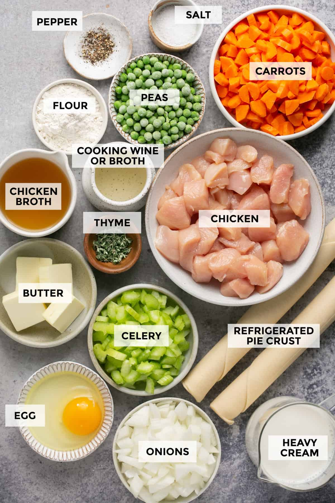
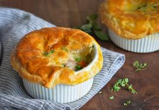

Pot pies are perfect for when the weather is getting colder. With their ability to be made with any type of meat including beef, turkey, steak and chicken, there is room for everyone to enjoy. Although this page focuses on the perfection that is chicken in pot pies. I chose chicken for this recipe because it is one of the most popular meats that people enjoy. These pies can be made in various sizes, from a single pie to a pie that can feed twenty people.
To make a chicken pot pie you will need basic kitchen supplies. Such as multiple mixing bowls, a spatula, bench scraper, pastry blender, a rolling pin, pie tin and lastly an oven. For ingredients you will need pepper, salt, carrots, flours, peas, chicken broth, cooking wine or broth, chicken, butter, thyme, celery, pie crust, eggs, onions and heavy whipping cream. This may seem like a long list of ingredients but the money and time it takes to make this dish is worth it for such a delicious tasting meal. While getting your ingredients together you will want to preheat the oven to 425°F. While the oven is heating you will want to mix your filling and then fill the pie!
 Pot pies date back to ancient Greece. The dish was originally named “Artocreas” and contained vegetables and meat in a pastry shell. Then the pie's popularity spread to Rome where they would make the crust of the pie with flour and oil. They would stuff the pie with different seafood such as fish and mussels. Then in the 1600s it became popular in England, instead of seafood it was commonly made with steak, beef and chicken. The crust was made thicker and it was common to add potatoes! From England the pot pie recipe was then carried to the United states. That is how we came to make, bake and enjoy the pot pies that we have today!